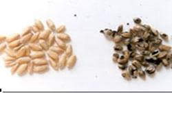
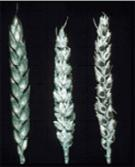
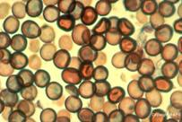
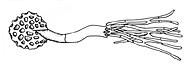
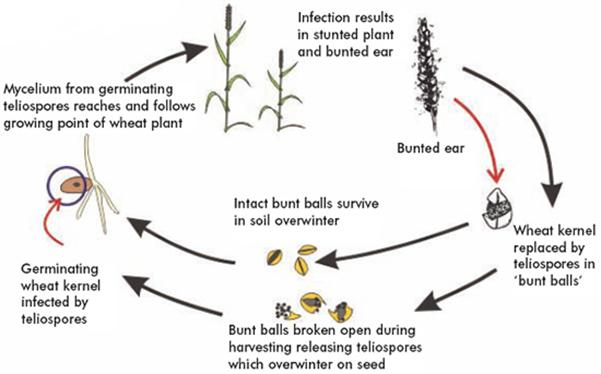

WHEAT :: MAJOR DISEASES :: HILL BUNT OR STINKING SMUT
Hill bunt or Stinking smut - Tilletia caries / T.foetida
Symptoms
The fungus attacks seedling of 8-10 days old and become systemic and grows along the tip of shoot. At the time of flowering hyphae concentrate in the inflorescence and spikelets and transforming the ovary into smut sorus of dark green color with masses of chlamydospores. The diseased plants mature earlier and all the spikelets are affected.
{kind=link}
|  |  |
Symptoms on earhead and grains |
|
Pathogen
Reticulate, globose and rough walled. No resting period. Germinate to produce primary sporidia which unite to form ‘H’ shaped structure.
|  |  |
Spores and its germination |
|
Life cycle
The spores on the seed surface germinate along with the seed. Each produces a short fungal thread terminating in a cluster of elongated cells. These then produce secondary spores which infect the coleoptiles of the young seedlings before the emergence of the first true leaves. The mycelium grows internally within the shoot infecting the developing ear. Affected plants develop apparently normally until the ear emerges when it can be seen that grain sites have been replaced by bunt balls. In India disease occurs only in Northern hills, where wheat is grown.
|  |
Favourable Conditions
- Temperature of 18-20˚C.
- High soil moisture.
Disease cycle
Externally seed borne
Management
- Treat the seeds with carboxin or carbendazim at 2g/kg.
- Grow the crop during high temperature period.
- Adopt shallow sowing.
- Grow resistant varieties like Kalyan sona, S227, PV18, HD2021, HD4513 and HD4519.